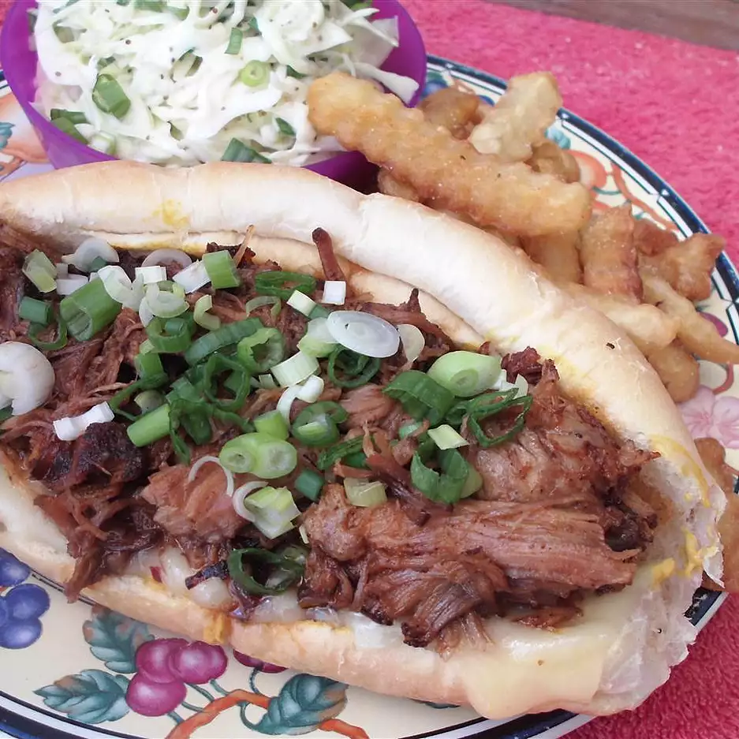

Pulled Pork Sandwiches

Description
Pulled pork recipes designed for parties
Ingredients
- 3 tablespoons brown sugar
- 3 tablespoons paprika
- 1 ½ tablespoons garlic powder (such as McCormick® California Style)
- 1 ½ tablespoons ground black pepper
- 1 ½ teaspoons salt
- ½ cup Dijon mustard
- 8 pounds pork shoulder roast (butt roast), rind removed
- ½ cup barbeque sauce, or to taste
- 18 large hamburger buns, split
Steps
- Preheat oven to 250 degrees F (120 degrees C).
- Mix brown sugar, paprika, garlic powder, black pepper, and salt in a bowl. Spread mustard over pork roast and sprinkle with brown sugar mixture, using the entire amount. Line a shallow baking dish with aluminum foil. Place a rack in the prepared baking dish and arrange pork roast on rack.
- Bake in the preheated oven until very tender, 9 to 11 hours. Let pork cool, then shred into bite-size pieces. Stir barbeque sauce into pork to moisten; serve with hamburger buns.